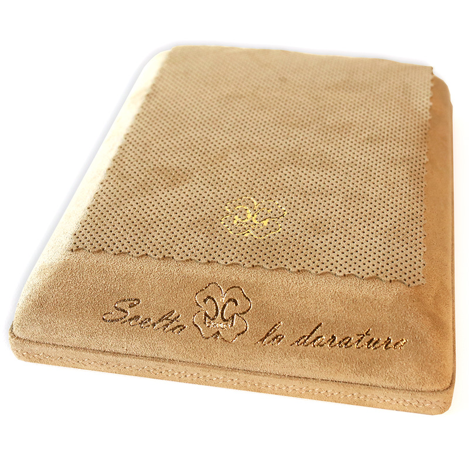
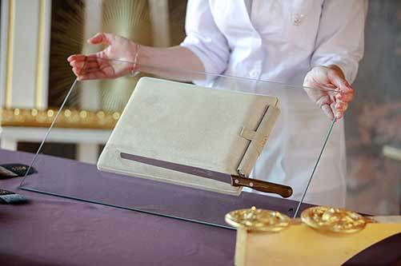
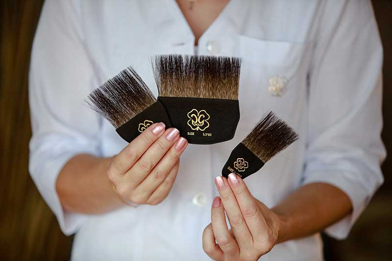

PG Group, La Doratura, gilding tools.
To make an order email us info@klondike.com.ua.
Please specify shipping address, shipping method (DHL is faster, but Ukrainian post is cheaper), product codes and product quantities, payment method (online payment via credit card or Western Union).
We will email you back with calculated shipping fee (which is additional payment and not included in product price) and payment invoice.
You can call us or Whatsapp +380955960751.
1. Smart gilding cushion (gilder's pad).
1.1. Gilding cushion Bambola PG. 39$. Product code K01018. Specifics: 15 х 15 cm (work space 12 х 12 cm), removable suede mat.
1.2. Gilding cushion Scelta PG. 64$. Product code K01019. Specifics: 20 х 17 cm (work space 18 х 14 cm), removable suede mat.
1.3. Gilding cushion Successo PG. 89$. Product code K01029. Specifics: 30 х 20 cm (work space 25 х 17 cm), removable suede mat.
1.4. Gilding cushion Meritato PG. 91$. Product code K01030. Specifics: 30 х 20 cm (work space 25 х 17 cm), removable suede mat, pocket for brushes.
1.5. Gilding cushion Complimento PG. 91$. Product code K01031. Specifics: 30 х 20 cm (work space 25 х 17 cm), in-built suede mat.
2. Gilder's pad wind protection (compatible with Successo, Meritato, Complimento). 19$. Product code K01032. The basis of the wind protection frame is moisture resistant cardboard, resistant to bending and deformation. Coating - eco suede with antistatic properties, which eliminates the adhesion of bulk materials. Wind protection is fixed to the pillow with an elastic band lined with genuine leather for a long service life.
3. Gilder's knife. 45$. Product code K01020. Blade length 24 cm. Made of high-quality red-hot steel filled with carbon, which makes it resourceful and does not need to be sharpened for a long time. A narrow blade and its sharpening at a certain optimum angle gives an accurate and easy cutting of leaf materials. Due to the thickness of steel 2 mm, the knife blade is always in the correct geometric shape and does not bend. The knife handle is made of exotic teak wood, which has low porosity and contains rubber, which has high water repellent properties and is resistant to any liquids, including acids. Even when wet, the teak handle has a minimum slip coefficient and does not deform. The special shape of the handle is convenient and comfortable to use. The knife is equipped with a case made of genuine leather with the functions of self-cleaning and magnitic holding the blade. The perforated inner layer of the cover provides ventilation and gentle storage. Thus, the knife is protected and safe during storage and transportation.
4. Set of three gilder's tip (width 90 mm, 65 mm, 37 mm). 41$. Product code K01021. Gilder's tip is used to pry off a sheet of leaf material, transfer and overlay on the surface prepared for gilding or on the gilding pad. The brush is made of natural squirrel hair with a certain unsaturated density for visual control of laying of leaf material of various severity. The tip handle is made of genuine leather, which guarantees its durability and comfortable use. The special design of the handle with recesses at the ends for the fingers is convenient when holding the tip from different sides.
